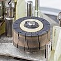

embrittle

Definition: Embrittlement is a significant decrease of ductility of a material, which makes the material brittle. Embrittlement is used to describe any phenomena where the environment compromises a stressed material's mechanical performance, such as temperature or environmental composition. This is oftentimes undesirable as brittle fracture occurs quicker and can much more easily propagate than ductile fracture, leading to complete failure of the equipment. Various materials have different mechanisms of embrittlement, therefore it can manifest in a variety of ways, from slow crack growth to a reduction of tensile ductility and toughness.
Source: Wikipedia
Wikipedia Page (Something wrong with this association? Let us know.)
Wikidata Page (Something wrong with this association? Let us know.)